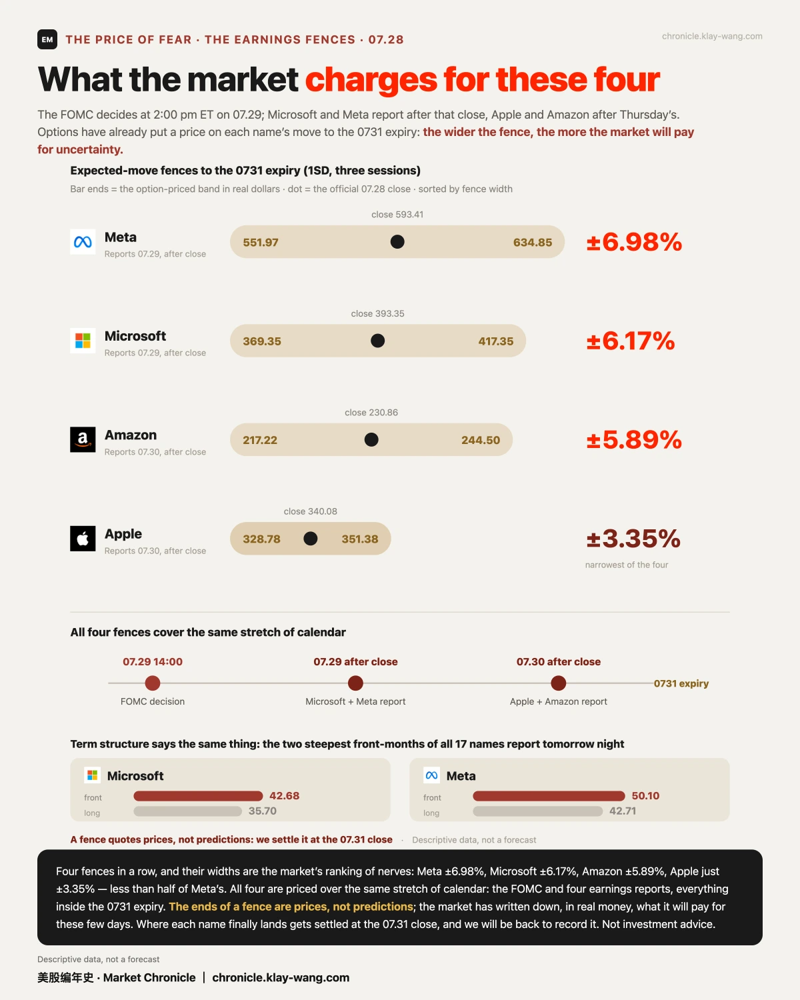
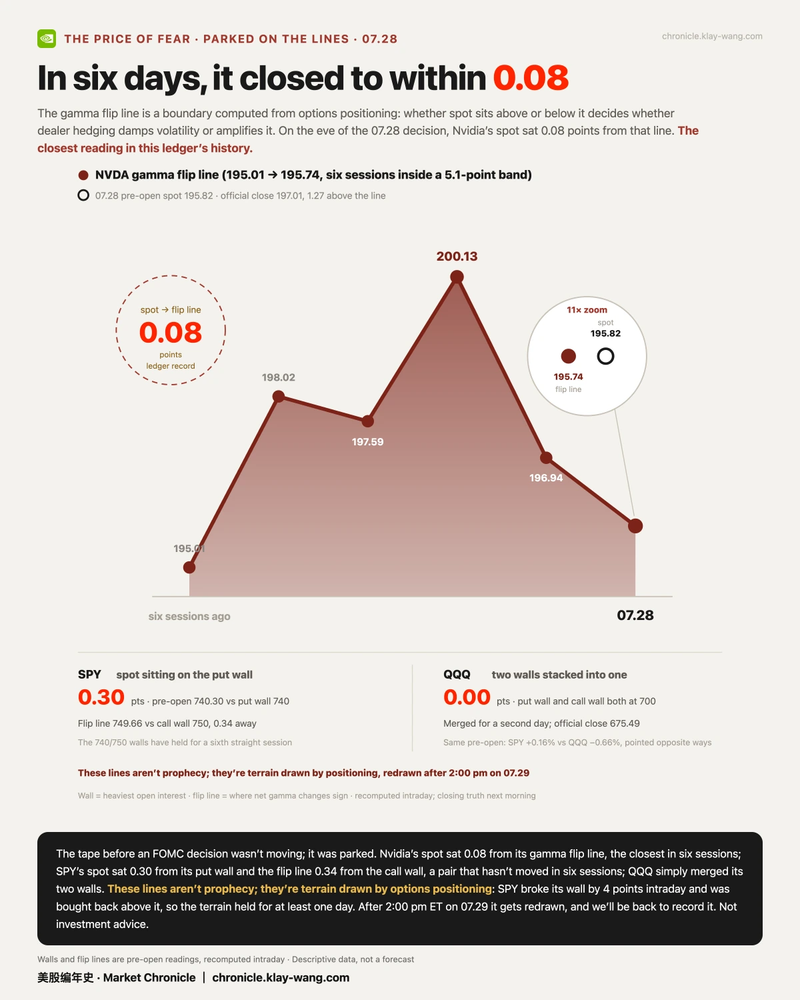
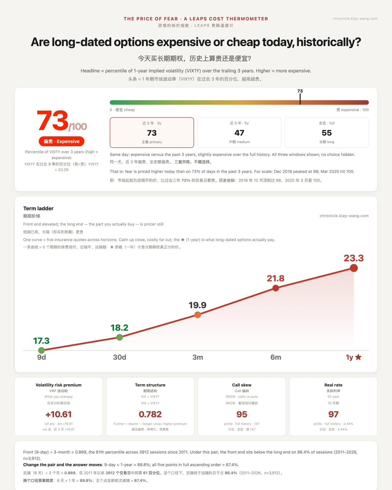

闪迪一天跌掉14%，可乐却64年新高，市场在等美联储· 07-28 · 7.27-7.31
• 存储没等来反弹：SNDK 再跌 14.25%，距高点回撤已 53%；半导体 6 红对平台 4 绿，第二天分组没有收敛，只有加深
• 双新高，双失守：苹果盘中 342.89、可口可乐 90.22 同创历史新高，收盘一只回撤 0.82%，一只把 +5.00% 几乎全吐回开盘价
• 市场停在线上等决议：SPY 压 put 墙差 0.30 点、英伟达距翻转线 0.08 点创纪录；财报围栏 Meta ±6.98% 到苹果 ±3.35% 全压 0731 前
🔀 半导体与平台，第二天还是两个世界
一句话：分组守住了，收敛只发生在边缘，跌幅那一侧反而更深了。
07.27 盘前，半导体 7 只全红对平台 6 只全绿；07.28 收盘，格局基本没变：半导体 1 微绿 6 红，平台 4 绿 2 微红。谷歌 +2.19%、微软 +1.09% 站在一边；另一边是 SNDK −14.25%（距高点回撤已 53%）、美光 −8.85%、AMD −8.15%、英特尔 −5.86%。
值得注意的是收敛发生的位置：动的只有边缘，英伟达从微红翻成 +0.25%，Meta 和亚马逊从绿翻成微红；跌幅那一侧完全没有收敛，SNDK 比盘前的 −6.82% 还深了一倍。上一期写过，市场追的是英伟达的信用故事，不是存储的供给故事；第二天的收盘价没有推翻这句话。顺带说明：全天没有任何资金流向数据，所以这不叫轮动，只是同日、方向相反。
📈 一只等了 46 年，一只等了 64 年
一句话：新高是两件事，摸到和留住，07.28 这两只票都只做到了前一件。
07.28，两只风马牛不相及的票同时摸到了自家的历史：苹果盘中 342.89，是 1980 年上市以来 11497 根日线里的最高一根；可口可乐盘中 90.22，是 1962 年以来 16250 根里的最高。到收盘，故事换了走向：苹果回撤 0.82% 收 340.08，停在新闻口径的 5 万亿美元市值门槛（340.43，据当日媒体口径，仅记录不背书）下方 0.35 美元；可口可乐更彻底，全天 +5.00% 几乎全在开盘一跳里给完，此后一路从 64 年新高往回走，收 88.27，正好落回开盘价 88.30 上。
可乐的跳空有明面理由：Q2 财报就是 07.28 盘前发的，调整后每股收益 0.97 美元超出预期的 0.93，可乐主品牌销量增长 5% 是 17 年来最强的一个季度（世界杯营销有贡献），公司随手上调了全年指引（据 Motley Fool、Benzinga）。财报解释了摸到，解释不了没留住：正股量 2.1 倍、期权 184602 张是平常的 2.51 倍，钱都来了，但尾盘没有人把价格接回去。
苹果那 0.35 美元停在的门槛，来路更长。这十年苹果总回报约 883%（含股息，据 Forbes），拆开是三层：盈利在涨，估值从前七年的 11 到 16 倍重估到 30 倍上方（据 TIKR），十年逾 7000 亿美元回购把股本从 223 亿股缩到 150 亿股、缩掉约三分之一。
重估的理由写在财务结构里：服务收入占比 26%（FY2025 首次突破千亿美元）、毛利率 46.9% 创纪录（2017 年还不到 40%）、服务毛利 75% 对硬件 36%。
市场重新定价的从来不是下一部手机，是从硬件周期股到生态系统的身份。07-28 停在 5 万亿门槛下 0.35 美元的，是这个身份的报价单。

⏱ 量能的钟点：钱是几点来的
一句话：同样的累计量，可以是全天匀速，也可以是两小时洪峰，只看一次收盘数据的人永远分不出来。
把五次盘中快照相减，累计成交量变成逐窗口增量，日内节奏第一次显形。英伟达 0729 到期的 200C：10:54 前累计 20703 张，10:54 到 11:31 新增 39940 张，11:31 到 12:46 新增 62892 张，下午两个窗口合计不到 4 万。同日其他高量合约同一个形状：上午打完，下午退潮。
这件事的价值不在这一天，在方法：收盘数据看得到量的大小，看不到量的钟点。这是本账本第一次量到日内节奏，此法记档，以后每天用。

🚧 FOMC 与四道围栏
一句话：围栏的宽度就是市场为不确定性开出的保险价，Meta 最贵，苹果最便宜。
07.29 14:00 ET 是 FOMC 决议；同日盘后，微软与 Meta 交财报；07.30 盘后轮到苹果和亚马逊。期权市场把每只票到 0731 的波动幅度都标好了价：Meta ±6.98%、微软 ±6.17%、亚马逊 ±5.89%、苹果只有 ±3.35%。期限结构在讲同一件事：微软近月 IV 42.68 对长端 35.70，Meta 50.10 对 42.71，是全宇宙 17 只里最陡的两条，而它们都排在 07-29 盘后。
大盘这边，SPY 的双墙 740/750 连续第六个交易日一动不动。07.28 盘中一度跌破 740 那道墙 4 点（最低 735.98），收盘收复并站上，收 740.86。围栏两端是价格，不是预测；每只票最后落在栏内还是栏外，07-31 收盘对账，我们回来记。
盘前的结构照片说得更直白：SPY 现价压在 put 墙上差 0.30 点，翻转线贴着 call 墙差 0.34 点；英伟达现价距 gamma 翻转线只有 0.08 点，是本账本开测以来最贴近的一次；QQQ 干脆把两道墙叠成一道（700/700）进入第二日。决议前最后一天，市场不是在走，是停在自己画的线上。


🃏 桌边三则：收盘数据看不见的
一句话：一笔翻面、一笔像换月的决断单、一条我自己的判断被推翻。
特斯拉的翻面。10:54 时，特斯拉的 A 级合约 9 条全是 put；到 12:46，已经铺成从 287.5P 到 330C 共 26 档的对称两侧梯。两侧同时铺、全在一天到期，更像做市与动量流，不像单向建仓；成交量不含买卖方向，这里不下方向结论。
SPCX 的一天三个极端。保险贵到两把尺子同时打顶：iv_rank 在两个口径下同时读 100；价格野到盘中跌破 52 周低（低 107.01）又收涨 2.56%，全天振幅 9.9%；而全天最大的一笔单，0807 到期的 330C 在一个 75 分钟窗口里打完当日量的 84.4%（+23797 张）后停死。现价 116.41，330 是 +183% 的虚值，52 周最高也才 225.64。到期周同档已经没有买盘，次周那档放量且挂着厚买盘，形态与换月一致，我倾向于读成搬家；但无法证明是同一持有人，不写成结论。两档 OI 已双源逐字核过。财报 08.4盘后，这天正好 T-5。

一条自我修正。上午 10:40 我看了半场数据，写可口可乐长天期一条都没有，不像有人建观点仓。全日收盘后，长天期有 13 个合约达标，其中 2027 年 3 月的 100C 成交 2569 张对 OI 216 张，11.89 倍，是干净的新建仓。
🌡 温度计：73 / 100
温度计量的是一件事：现在买一年期的保险，贵不贵。07-28 读数 73 / 100，偏贵：VIX 一年期 23.29，在近三年里排第 73 位（近五年第 47，全历史第 55）。事件全在前面，07-29 决议、当晚财报，保险已经按偏贵的价码收钱。它不预测方向，只给你一个坐标：这个价，比过去三年里七成的日子都贵。

本站不提供投资建议，不预测方向，不做择时。